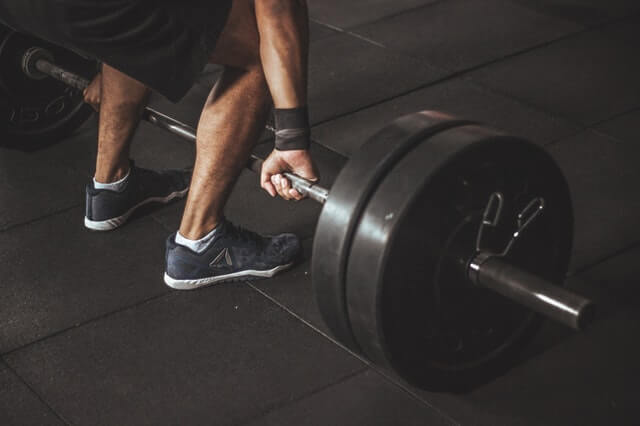

Antes de comenzar, dejemos en claro lo que es una persona con un cuerpo ectomorfo y qué otras estructuras corporales existen.
Somatotipos. ¿Eres ectomorfo?

Existen tres tipos de somatotipos generales: El ectomorfo, el mesomorfo y el endomorfo.
El aspecto físico del ectomorfo demuestra ser delgado, con largas extremidades (brazos y piernas). Se caracteriza, principalmente, por lo difícil que le es aumentar de peso y, por consiguiente, el ganar masa muscular y fuerza.
El mesomorfo es el somatotipo que todos quisiéramos ser/tener. Representa un cuerpo atlético, buena postura y se mantiene en forma sin tanto esfuerzo. Su metabolismo es regular, puede bajar o subir peso en poco tiempo. Les es fácil ganar fuerza, flexibilidad y masa muscular.
El endomorfo, a diferencia de los anteriores, es más corpulento. Normalmente es grueso de cuerpo y tiende al sobrepeso y a acumular grasas; pero le es relativamente sencillo ganar fuerza y masa muscular.
Aclaraciones.
Ahora que sabemos qué es un ectomorfo, nos adentraremos a qué se debe hacer para crecer siéndolo.
Cabe aclarar que todo lo que voy a mencionar es en base a mi experiencia.
Primeramente, no es necesario, en lo absoluto, gastar dinero en suplementos. Si quieres y puedes adquirirlos, mejor. Pueden ayudar a acelerar levemente el proceso, pero no es un requisito primordial. En lo personal, no hice uso de ellos.
El ectomorfo y su forma de alimentarse.
Las personas ectomorfas suelen comer muy poco. No porque estén haciendo dieta ni se estén cuidando, sino porque su estómago está acostumbrado a almacenar y digerir una cierta cantidad de alimentos. A partir de esto es que debemos actuar para comenzar con el cambio.
Debemos desacostumbrar nuestro organismo y cambiar, de a poco, el límite de almacenamiento que éste tiene predefinido. Lo cual no es nada sencillo, pero si queremos crecer tenemos que comer, y mucho.
¿Delgado, pero con panza?
También es posible que seas de esos casos excepcionales, en los que aparentas tener panza, pero aun así escaseas de masa muscular y te ves muy delgado.
Para comenzar desde una buena base, es mejor eliminar esa grasa sobrante.
Siendo ectomorfo, te resultará fácil por la velocidad de tu metabolismo. Debes evitar comer sólo chatarra y alimentos que te generen hinchazón. Deja el alcohol.
Cómo empezar a ganar masa muscular.
Debemos comenzar por cambiar nuestros hábitos alimenticios.
Primero cambiemos a un plato más grande. Si no tienes platos más grandes, sólo llena un poco más el que ya tienes, sin que llegue a parecer que desborda. De allí pasas a 2 platos con raciones pequeñas, y de allí a 2 raciones medianas y así sucesivamente.
Procura aumentar las veces que comes en el día, en lo posible de 6 a 10 veces. Si crees que es exagerado, también aquí puedes disminuir las porciones, en un principio, e ir aumentándolas gradualmente.
Comer más no necesariamente significa comer peor. Te recomiendo dejar de lado todo lo que tenga que ver con frituras, gaseosas o sodas y azúcares. Puede parecer difícil, pero tener mejores hábitos alimenticios desde ya, puede ahorrarnos muchos problemas a futuro.
Recordemos que luego de los 30, aproximadamente, el metabolismo se ralentiza de forma brusca. Esto nos hace más vulnerables a contraer sobrepeso, si es que no llevamos una alimentación sana y controlada.
Retomando lo de la ganancia de masa muscular, deberíamos aumentar significativamente el consumo de carbohidratos, grasas y proteínas. Éstos son algunos alimentos que pueden ayudarte a obtener un buen aporte calórico, que es lo que buscamos:
- CARNES ROJAS
- PESCADO
- HUEVOS
- LECHE
- LEGUMBRES
- FRUTOS SECOS
- FRUTAS Y VERDURAS
Evalúa tu progreso.
Puede que todo lo que dije no sea suficiente. Puede que, aún luego de esto, hayas estado un largo tiempo sin ver cambios.
Siento decirte que, si no ves cambios, es porque necesitas comer aún más. Sí, suena un poco desmotivador, pero si lo que en verdad quieres es ganar masa muscular, debes tener un aporte calórico mayor al que tu organismo consume al estar activo (o no). A veces, hasta quizás debas comer sin hambre.
No hay un mínimo de ingestión de calorías definido que te asegure que vas a ganar masa, varía mucho entre cada persona. El metabolismo del ectomorfo es muy rápido a veces. Mientras haya quienes con 2.500 calorías diarias les será suficiente, también estará aquél que necesite consumir hasta más de 5.000 calorías diarias para apenas lograr un cambio visible.
Si ves que no llegas a ese porcentaje de calorías con lo que ya consumes, no está de más sumarle algún snack o dulce para llegar (asumiendo que aún no los implementaste).
Nada sirve sin el entrenamiento adecuado.
Debes tener en cuenta que acrecentar el volumen no sólo depende de tu alimentación, sino también de cómo entrenas.
Seguramente alguna vez hayas oído hablar sobre "La Etapa De Volumen". Es lo que haremos. Por si no te suena, básicamente es donde el cuerpo se encarga, por unos meses, de priorizar la ganancia de grasas y de masa muscular, para posteriormente deshacerse de la grasa sobrante, al entrar en “Definición”.
Tenemos que aumentar significativamente nuestro empeño a la hora de entrenar. Levanta más peso con menos repeticiones. Te recomiendo hagas 3 o 4 series de 6 a 10 repeticiones con el máximo peso que puedas resistir sólo y manteniendo una buena técnica.
Si no tienes pesas, intenta hacer más repeticiones, pero trata de conseguir algo con peso que puedas utilizar para entrenar.
Recuerda, no importa cómo, pero debes lograr redoblar tus esfuerzos en el entrenamiento.
Paciencia y dedicación, ante todo.
No esperes tener los resultados que quieres en tan solo un mes, sería poco realista.
Todo lo bueno en la vida requiere esfuerzo y constancia, no te desanimes si no alcanzas tus metas en poco tiempo. Disfruta del proceso teniendo la seguridad de que algún día, sin darte cuenta, estarás en el lugar que quisiste, como quisiste.